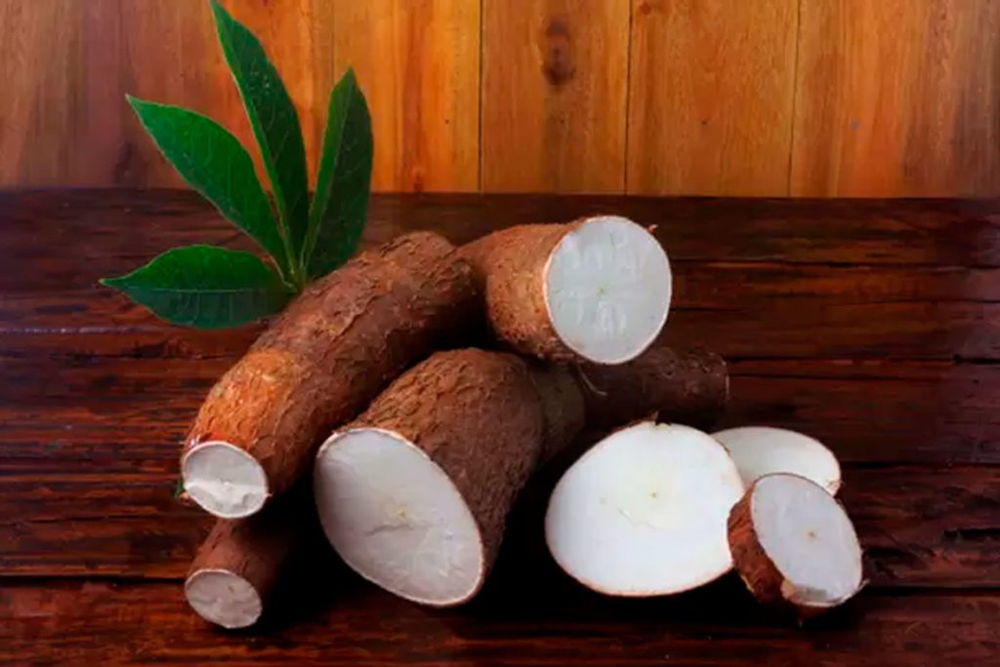

Durante séculos, a mandioca foi o principal alimento consumido no Brasil. Muito antes da chegada dos colonizadores, a raiz já era cultivada pelos povos indígenas em seu sistema de manejo da floresta, em que diversas espécies de culturas podem conviver, e que respeita a biodiversidade. A capacidade de adaptação da mandioca a diferentes solos e a possibilidade de mantê-la intacta por até dois anos à espera de ser colhida encantaram os portugueses, que aprenderam com os povos originários a cultivar o alimento e também as diferentes formas de consumi-lo.
